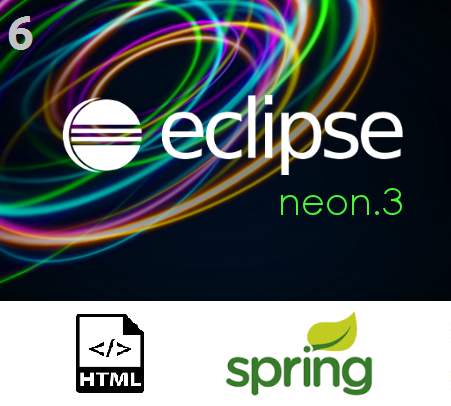
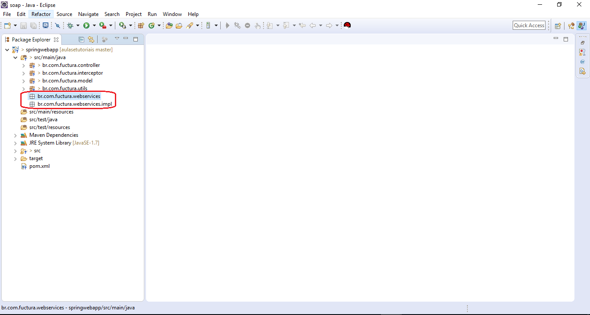
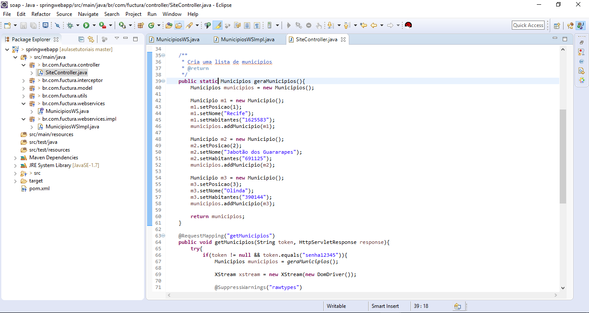
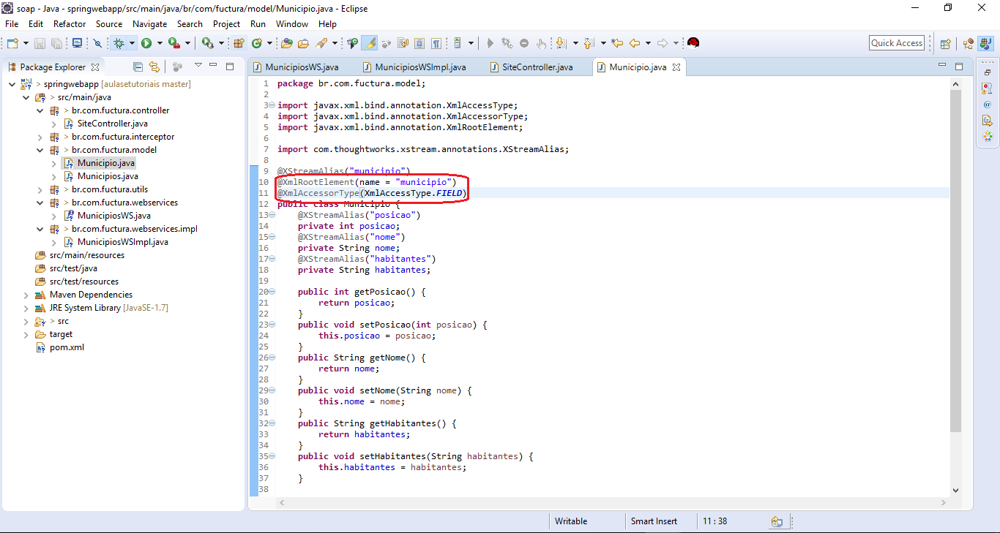
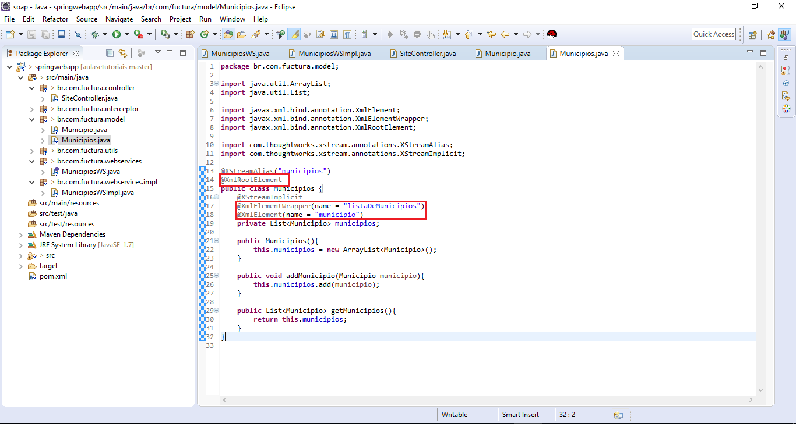
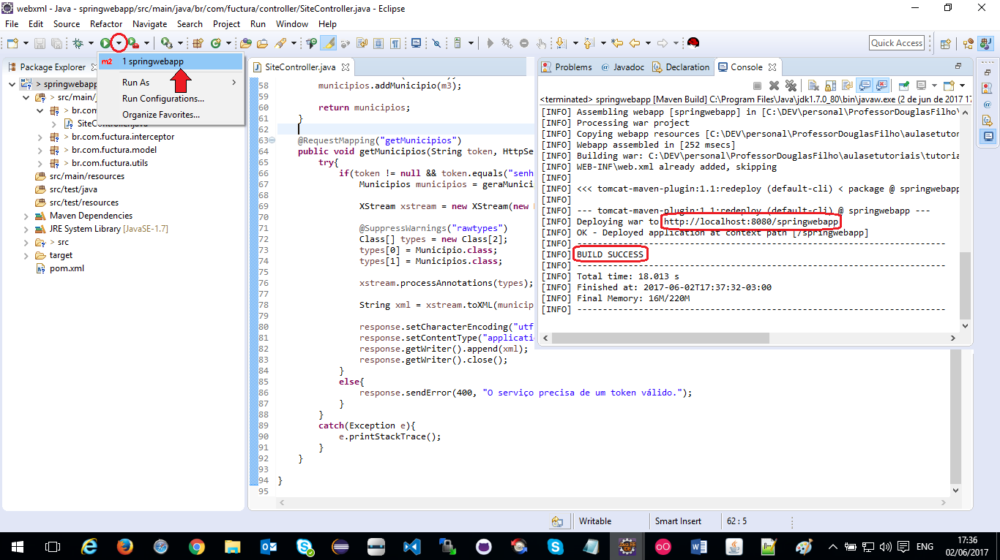
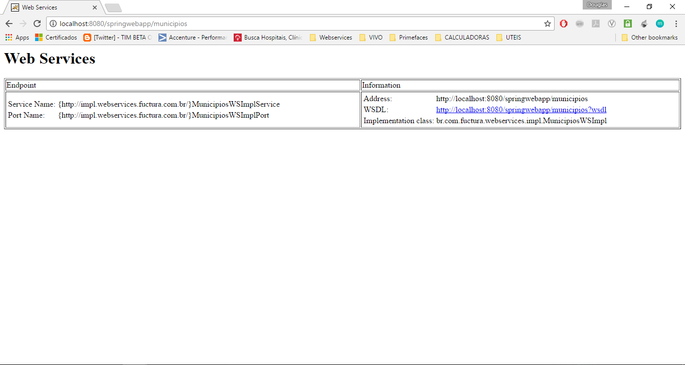

Criando seu Webservice SOAP
Para prosseguir com este tutorial é necessário que já tenha executado com êxito o Tutorial 6 - Consumindo o XML da Web
Iremos utilizar a estrutura do projeto e adicionaremos pequenas mudanças pra servir o nosso WebService
Ao final iremos ter o mesmo resultado anterior, porém, através do uso de um WebService SOAP
Primeiro, crie os pacotes que serão usados para criar a interface de serviço (br.com.fuctura.webservices)
e sua implementação (br.com.fuctura.webservices.impl)
Crie a interface do serviço (MunicipiosWS):
Clique com o botão direito do mouse sobre o pacote br.com.fuctura.webservices e clique em "New" > "Interface".
A interface deve ficar assim:
package br.com.fuctura.webservices;
import javax.jws.WebMethod;
import javax.jws.WebService;
import javax.jws.soap.SOAPBinding;
import javax.jws.soap.SOAPBinding.Style;
import javax.jws.soap.SOAPBinding.Use;
import br.com.fuctura.model.Municipios;
@WebService
@SOAPBinding(style = Style.RPC, use = Use.LITERAL)
public interface MunicipiosWS {
@WebMethod(operationName = "listar")
public Municipios listar();
}
Agora vamos criar a classe que irá implementar a interface de serviço.
Nessa classe (MunicipiosWSImpl) será feita a lógica a ser executada, neste caso, ela ficará assim:
package br.com.fuctura.webservices.impl;
import javax.jws.WebService;
import br.com.fuctura.controller.SiteController;
import br.com.fuctura.model.Municipios;
import br.com.fuctura.webservices.MunicipiosWS;
@WebService(endpointInterface = br.com.fuctura.webservices.MunicipiosWS")
public class MunicipiosWSImpl implements MunicipiosWS{
@Override
public Municipios listar() {
Municipios municipios = SiteController.geraMunicipios();
return municipios;
}
}
Para que seja possível acessar o método geraMunicipios() da classe SiteController, é necessário modificar a assinatura do método
Ele deve deixar de ser private para ser public static
Anote as classes modelo de acordo com o código as imagens abaixo, as anotações são necessárias para que a API JaxWS possa converter a classe e publica-la pela WSDL.
 Dentro da pasta WEB-INF, crie um novo arquivo xml chamado "sun-jaxws.xml" com o seguinte código:
<?xml version="1.0" encoding="UTF-8"?>
<endpoints xmlns="http://java.sun.com/xml/ns/jax-ws/ri/runtime" version="2.0">
<endpoint name="municipios"
implementation="br.com.fuctura.webservices.impl.MunicipiosWSImpl"
url-pattern="/municipios"/>
</endpoints>
Adicione as seguintes dependencias ao arquivo pom.xml de seu projeto:
<dependency>
<groupId>javax.xml.ws</groupId>
<artifactId>jaxws-api</artifactId>
<version>2.2.11</version>
</dependency>
<dependency>
<groupId>com.sun.xml.ws</groupId>
<artifactId>jaxws-rt</artifactId>
<version>2.2.10</version>
</dependency>
<dependency>
<groupId>org.glassfish.ha</groupId>
<artifactId>ha-api</artifactId>
<version>3.1.9</version>
</dependency>
Crie um listener para o JAX-WS no arquivo "web.xml"
<listener>
<listener-class>
com.sun.xml.ws.transport.http.servlet.WSServletContextListener
</listener-class>
</listener>
<servlet>
<servlet-name>municipios</servlet-name>
<servlet-class>
com.sun.xml.ws.transport.http.servlet.WSServlet
</servlet-class>
<load-on-startup>1</load-on-startup>
</servlet>
<servlet-mapping>
<servlet-name>municipios</servlet-name>
<url-pattern>/municipios</url-pattern>
</servlet-mapping>
Com o Tomcat em execução, execute o "Maven Build" para redeployar sua aplicação no servidor.
Acesse a url http://localhost:8080/springwebapp/municipios para obter acesso ao serviço.
Acesse o codigo deste tutorial neste link.
Continue nos acompanhando, acesse nossa home e veja o quanto pode aprender com Java.
Até mais!